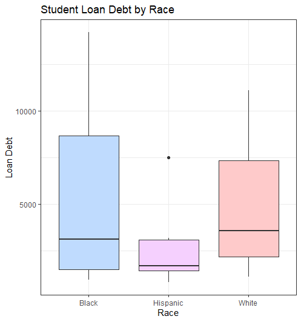
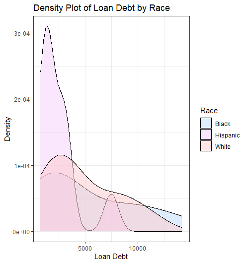
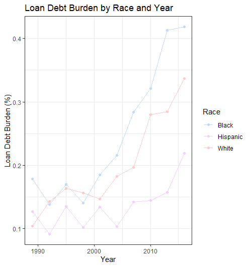

Exploring Racial Disparities in Student Loan Debt
By Hodan Abdirahman
In this project, we delve into the complex dynamics of student loan debt and its impact on different racial groups. Student loan debt has become a significant concern in today's society, affecting millions of individuals striving for higher education. However, it is crucial to recognize that the burden of student loans may not be evenly distributed among racial groups.
Throughout this analysis, we will leverage the capabilities of R to explore and visualize the data, aiming to uncover patterns and trends related to student loan debt among different racial groups.
## # A tibble: 30 x 4 ## year race loan_debt loan_debt_pct ## <dbl> <chr> <dbl> <dbl> ## 1 2016 White 11108. 0.337 ## 2 2016 Black 14225. 0.418 ## 3 2016 Hispanic 7494. 0.219 ## 4 2013 White 8364. 0.285 ## 5 2013 Black 10303. 0.412 ## 6 2013 Hispanic 3177. 0.157 ## 7 2010 White 8042. 0.280 ## 8 2010 Black 9510. 0.321 ## 9 2010 Hispanic 3089. 0.144 ## 10 2007 White 5264. 0.197 ## # … with 20 more rowsHow does the average student loan debt vary across different races?Whites are relatively close to Blacks in terms of loan debt, as indicated by a comparable median and a similar spread of values. While there may be some overlap in loan debt levels between Blacks and Whites, the boxplot suggests that, on average, individuals in the Black race tend to have higher loan debt.These observations from the boxplot provide a comparative overview of the loan debt distribution across different races, highlighting the higher loan debt burden among Blacks, a relatively close but lower burden among Whites, and the lowest loan debt levels among Hispanics.Are there differences in the loan debt distribution among races?In the Density Plot of Loan Debt By Race, it is observed that the density for Hispanics is relatively large compared to the other races, despite having the least loan debt. This can be attributed to the distribution of loan debt values for Hispanics, which might have a wider spread compared to other races.On the other hand, the densities for Blacks and Whites are somewhat similar, with the majority of the density appearing at higher loan debt values. However, there seems to be a higher concentration of loan debt values for Blacks compared to Whites, as indicated by the larger density in that region.These observations suggest that although Hispanics have the least loan debt, their loan debt values may vary significantly. Blacks and Whites, on the other hand, exhibit a more concentrated distribution of loan debt values, with Blacks showing a slightly higher prevalence at higher loan debt levels compared to Whites.Remember that these observations are based on the density plot, which provides insights into the distribution of loan debt values for each race.How does the loan debt burden differ by race and year?The visualization suggests that Blacks are the most burdened by loan debt, followed by Whites, and then Hispanics.The line representing the loan debt burden for Blacks shows a semi-linear pattern with a steeper increase over time. This indicates that the debt burden for Blacks is growing at an exponential rate compared to other races, highlighting a concerning trend of increasing loan debt.For Hispanics exhibits a zigzag pattern, with alternating increases and decreases in consecutive years. This suggests that the loan debt burden for Hispanics fluctuates over time, potentially indicating variations in factors influencing debt accumulationThe line representing the loan debt burden for Whites shows a relatively constant and increasing trend. This implies that the loan debt burden for Whites is steadily rising over the years, although at a comparatively slower rate than that of Blacks.The line seem to highlights the disproportionate burden faced by the black race, the fluctuating nature of loan debt for Hispanics, and the consistent but slower growth for Whites. These findings underscore the need for further investigation and targeted efforts to address the racial disparities in student loan debt.ConclusionIf we had access to more information about income and other details in the data, we could have discovered some important insights about student loan debt and racial groups. Here are the main findings we could have uncovered:Firstly, we could have calculated and compared the percentage of income that individuals from each racial group spend on repaying their student loan debt. This analysis would have shown us how much financial strain different racial groups experience and how much of their income goes towards paying off their loans.Secondly, by examining the loan debt-to-income ratio for each racial group, we could have identified any disparities in the level of debt relative to income. This ratio would have helped us understand whether certain groups are more burdened by student loan debt compared to others.Source